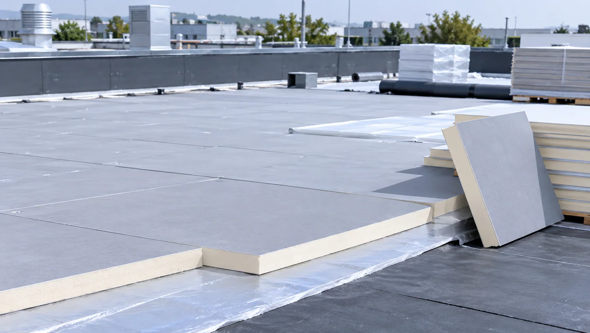

From new commercial roofs to energy retrofits, each flat roof assembly creates different demands for rigid foam insulation boards. Explore practical application requirements and the facing materials that support board production and integration.
From Roof Assembly Requirements to Material Solutions.
Select a flat roof application to understand typical production and installation priorities, then identify fiberglass coated veil or aluminum foil facing options suited to PIR/PUR insulation board design.

COMMERCIAL FLAT ROOF INSULATION
APPLICATION-BASED SOLUTION01 / 04
Reliable Facing for Commercial Flat Roof Boards
Flat roof boards face transport and installation demands; facer damage, uneven coating or poor core bonding can disrupt handling.
THE MATERIAL APPROACH
For PIR/PUR roof boards, assess veil coverage, handling and core adhesion; check foil laminates when specified. Verify finished-board and roof-system performance.
TECHNICAL NOTE. The facer is one component of the roof insulation board, not a stand-alone waterproof roof covering or vapor barrier. Water resistance, fire classification, thermal performance, and weather-exposure limits must be validated for the finished board and complete roof assembly.
RECOMMENDED MATERIALS
Discover the Right Surface Material.
Two facing material families for PIR/PUR rigid foam insulation boards used in flat roof systems. Select according to production requirements and verified board/assembly specifications.
Align material construction, surface finish, lamination properties, and roll specifications with the requirements of your PIR/PUR board manufacturing line.
Surface & Finish
Coated fiberglass surfaces in white, gray, or specified finishes; foil-facing appearance and texture according to the selected laminate.
Facer Construction
Coating formulation, foil gauge, reinforcement or composite layer configuration subject to feasibility and testing.
Bonding & Processing
Foam-core adhesion, lamination quality, line speed, handling properties, and compatibility with subsequent roof layers.
Widths & Roll Formats
Roll width, length, winding, and packaging designed around the production line and logistical requirements.
Let’s Find the Right Facer for Your Flat Roof Insulation Board.
Tell us about your PIR/PUR board construction, roofing application, facing requirements, and manufacturing process. GRECHO can help you compare fiberglass coated veil and aluminum foil facers for technical evaluation and sampling.
APPLICATION SUPPORT
Commercial Flat Roofs / Industrial Roofs / Energy Retrofit / Prefabricated Roof Systems / Technical Discussion / Sample Requests